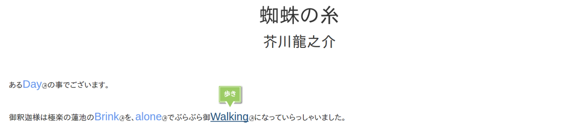

Code-Switch Reading and Lexical Learning
説明
-
Code-swithingとは、複数の言語を入れ替えながら読んだり、話したり、聞いたりすることです。
-
Code-Switch Readingはその通りで、文章の中のいくつかの単語が、他の言語に入れ替わっています。
-
Lexical Learningもその通りで、単語を習得することを意味しています。
-
このページが目指しているものは、Code-Sweitch Readingによって、外国語を習得しよう。ということです。
-
実は、読むときに複数言語をswitchしながら読むと、語彙の習得が進むと言われています（Cobb,2007）。
-
未知の単語に出会った時、周囲の単語から予測する機能が働きます。その予測によって語彙の習得が進むのです。
-
一般に、予測するということが学習にとって重要な要素であるといわれており、それは脳活動との関連からも確認されています（Borovsky, et al., 2012）。

使い方
-
使い方は単純です。
-
それぞれのプルダウンメニューから好きな設定を選び、STARTを押してください。
-
現在実装済みの言語は、英語、中国語、ロシア語です。
-
ランダムスイッチングとは、スイッチする単語をランダムに選ぶことです。オリジナルでは、人手で予測できると判断したものをスイッチしていますが、ランダムの場合、予測不可能なものがスイッチされる場合もあります。
-
ランダムスイッチングを選択した際に、スイッチング率で何%の単語をスイッチするかを決定できます。
-
スイッチされた単語は青色で表示され、マウスを上に置くと元の日本語の単語が吹き出しで出てきます。
-
クリックすると、スイッチした外国語の単語を辞書で引いたページに飛びます。
-
隣の人型のアイコンをクリックすると、Speech Synthesis APIによる単語の読み上げが聞けます。
-
なお、単語の分割はmecab、対訳辞書はgoogle翻訳を用いて全自動化しており、誤りが含まれます（特に対訳辞書）。ご了承ください。
未実装
-
文節区切りの対訳辞書
-
確率モデル（言語モデル）による変換候補の自動決定